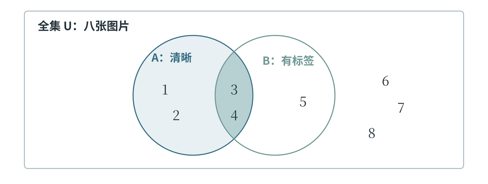

3.1 逻辑、集合与条件判断
条件怎样组成一个判断
“这张图片的宽度大于 100 像素”是一句可以判断真假的话。给定图片宽度以后，它或者成立，或者不成立。这样的陈述称为命题。“把图片放大一些”是一项要求，没有真假之分，因而不是这里讨论的命题。一个陈述是否为真，可以依赖具体条件：宽度为 120 像素时，前面的命题为真；宽度为 80 像素时，它为假。
较复杂的要求可以由几个简单条件组成。设 \(P\) 表示“图片宽度不少于 100 像素”，\(Q\) 表示“图片高度不少于 100 像素”。这里的字母只是两个命题的简称，不表示具体数值。“\(P\) 并且 \(Q\)”要求两项都成立，称为合取；“\(P\) 或者 \(Q\)”要求至少一项成立，称为析取。数学中常分别写成 \(P\land Q\) 和 \(P\lor Q\)，对应 Python 的 and 和 or。表 3-1 列出了所有可能的真假组合，这样的表称为真值表。
表 3-1 两个命题的真假组合
| P | Q | P 并且 Q | P 或者 Q |
|---|---|---|---|
| 真 | 真 | 真 | 真 |
| 真 | 假 | 假 | 真 |
| 假 | 真 | 假 | 真 |
| 假 | 假 | 假 | 假 |
这里的“或者”允许两项同时成立。若要求“恰好满足一项”，就要额外排除两项都成立的情况。图片宽、高均为 120 像素时，\(P\lor Q\) 为真，却不符合“恰好有一边不少于 100 像素”的要求。自然语言中的“或”有时带有不同含义，写成程序之前，必须把这一点说清楚。
把一个命题的真假反过来，称为否定，记作 \(\neg P\)，对应 Python 的 not。否定“宽度不少于 100”，得到的是“宽度小于 100”，不是“宽度不大于 100”；恰好等于 100 的情况原来属于真，否定后就应属于假。检查边界上的取值，是理解条件的一种直接办法。对于组合条件，否定要作用于整个要求。“并非宽和高都合格”，只需至少一边不合格；“宽和高都不合格”则要求两边同时不合格。于是，否定“\(P\) 并且 \(Q\)”，相当于“非 \(P\) 或者非 \(Q\)”；否定“\(P\) 或者 \(Q\)”，相当于“非 \(P\) 并且非 \(Q\)”。这两条关系称为德摩根律。在程序中，not (P and Q) 与 (not P) or (not Q) 的真假结果相同，括号指出了否定的范围。
从条件推出结论
“如果一个整数是 4 的倍数，那么它是偶数”，说明前一个条件成立时，后一个结论也成立。这样的关系称为蕴含，常写成 \(P\Rightarrow Q\)。它把前提与结论联系起来。要否定这条关系，需要找到一个反例：既是 4 的倍数，又不是偶数的整数。只找到一个偶数 6，不能否定原来的话，因为原来的话并没有说“所有偶数都是 4 的倍数”。这也说明，前提和结论不能随意倒过来。已知一个整数是偶数，仍不能断定它一定是 4 的倍数。反过来，已知它不是偶数，就能断定它不是 4 的倍数：如果它是 4 的倍数，就会与“不是偶数”发生冲突。由 \(P\Rightarrow Q\) 推出 \(\neg Q\Rightarrow\neg P\)，称为使用逆否命题。这种判断在排除不可能情况时很有用。
把一般规则用于一个具体对象，是常见的推理方式。例如，“所有正方形都有四条边；图形 A 是正方形；所以图形 A 有四条边”，由两个前提得到一个结论，具有三段论的形式。推理形式正确，还需要前提本身可靠。如果规则库既存着“所有鸟都会飞”，又存着“企鹅是鸟，企鹅不会飞”，规则与事实之间就有矛盾。计算机照着有矛盾的规则推理，并不能使这些前提自动变得正确。
“所有”与“有的”也决定了结论的范围。“所有图片都清晰”的否定，是“至少有一张图片不清晰”，不需要证明每张都模糊。“有的图片带有标签”的否定，则是“一张带标签的图片也没有”。在审查人工智能系统的判断规则时，找出一个反例就能否定“所有情况都如此”；观察到几次成功，却不能直接证明对所有情况都成立。
用集合表示一类对象
按照明确规则归在一起的一批对象，称为集合，其中的对象称为元素。例如，把编号为 1、2、3、4 的四张图片组成集合，可以写成 \(A=\{1,2,3,4\}\)。\(2\in A\) 表示 2 是 \(A\) 的元素，\(7\notin A\) 表示 7 不是它的元素。集合只关心有哪些元素，不关心排列顺序；同一个元素写两次，也不会多出一个成员。如果集合 \(B\) 中的每个元素都属于集合 \(A\)，就说 \(B\) 是 \(A\) 的子集，记作 \(B\subseteq A\)。例如，\(\{1,3\}\) 是 \(\{1,2,3,4\}\) 的子集。没有任何元素的集合称为空集，记作 \(\emptyset\)。空集与只含数字 0 的集合不同：\(\{0\}\) 仍有一个元素。
讨论集合之前，还要明确全部候选对象的范围，称为全集，通常记作 \(U\)。设当前有八张图片，\(U=\{1,2,3,4,5,6,7,8\}\)；集合 \(A=\{1,2,3,4\}\) 收集清晰的图片，集合 \(B=\{3,4,5\}\) 收集带标签的图片。图 3-1 用长方形表示全集，用两个圆表示两个集合。这种用区域表现集合关系的图称为韦恩图。编号放在哪块区域，表示它具有什么条件，与图上面积的大小无关。

\(A\) 与 \(B\) 的交集记作 \(A\cap B\)，包含同时属于二者的元素，因此结果为 \(\{3,4\}\)。并集记作 \(A\cup B\)，包含至少属于其中一个集合的元素，结果为 \(\{1,2,3,4,5\}\)。\(A\) 相对于全集的补集记作 \(U\setminus A\)，表示全集里不属于 \(A\) 的元素，这里是 \(\{5,6,7,8\}\)。符号 \(\setminus\) 还可以表示两个集合的差：\(A\setminus B=\{1,2\}\)，留下属于 \(A\)、但不属于 \(B\) 的部分。集合运算与逻辑条件有直接联系。筛选“清晰并且有标签”的图片，就是取交集；筛选“清晰或者有标签”的图片，就是取并集；筛选“不清晰”的图片，就是在当前全集中取清晰图片的补集。全集换成另一批图片，补集也可能改变，所以“剩下的全部”必须有明确范围。
计算并集中有多少个元素时，不能把两边的数量直接相加。上例中 \(A\) 有 4 个元素，\(B\) 有 3 个元素，编号 3、4 被两边都算了一次，应各减去一次，因此并集的元素数为 \(4+3-2=5\)。用 \(|A|\) 表示有限集合 \(A\) 的元素个数，可以把这一关系写成：
把一句筛选要求翻译成集合
仍以八张图片组成的全集为例，清晰图片为 \(A=\{1,2,3,4\}\)，带标签图片为 \(B=\{3,4,5\}\)。若要求“清晰，但还没有标签”，应先在清晰图片中查找，再排除带标签的部分，得到 \(A\setminus B=\{1,2\}\)。若要求“并非既清晰又带标签”，则应排除同时满足两项的图片，得到 \(U\setminus(A\cap B)=\{1,2,5,6,7,8\}\)。两句话只差几个字，选出的范围却大不相同。可以逐项检查编号 5 来验证区别。它带标签但不清晰，因此不满足第一句话，却满足第二句话。编号 6 既不清晰也没标签，同样只满足第二句话。选择一个正好能区分两种解释的对象，比只检查编号 3 这样的共同排除项更有帮助。这种对象可以用来检验条件表达是否准确，写程序时的小规模测试也经常采用这种思路。
集合图可以表现范围，逻辑式可以写进程序。例如，“清晰但未标注”对应 clear and not labeled；“并非既清晰又已标注”对应 not (clear and labeled)。括号使否定作用于整个合取。翻译时先确定每个简单条件，再按“并且”“或者”“并非”的层次组合，最后用具体对象检验，便能把自然语言、集合和代码联系起来。